MEGA65 Hardware & FPGA · Lesson 02
Lesson 01 said "one FPGA becomes the chipset." The schematic shows you exactly how it touches the real world.
A schematic is not a picture of the board — it's a diagram of connections. It throws away physical layout and keeps only what's electrically true: which pin of which chip joins which net. Learn to read one and the machine stops being a mystery box.
The official MEGA65 schematic is a PDF that ships inside the User's Guide source repo:1
raw/github/MEGA65-mega65-user-guide/assets/TE0765-06.PDF — the R6 schematic, 21 sheets.TE0765-03.PDF (R3), TE0765-02.PDF (R2).appendix-schematics.tex (the Developer's Guide "Schematics" chapter)."TE0765" is the board's part number. The MEGA65 mainboard is manufactured by
Trenz Electronic; TE0765 is their model, and the -06 suffix is
the R6 revision — the same board Lesson 01 locked onto. The title block on every sheet
also reads "Rev. 06," dated 2023-12-14, and the design is released as
open hardware under the CERN-OHL-P v2.0 licence.1
Before touring the MEGA65 specifically, five reading skills. They apply to every schematic you'll ever open.
A board this size isn't one giant drawing. It's a top sheet that lists
sub-sheets, each covering one function. Think of it as a table of contents. The MEGA65's top sheet names
20 sub-sheets — HDMI, VGA, Ethernet, SOUND,
KEYBOARD, POWER, EXP_Slot, and so on — plus housekeeping like mounting
holes and shielding.1
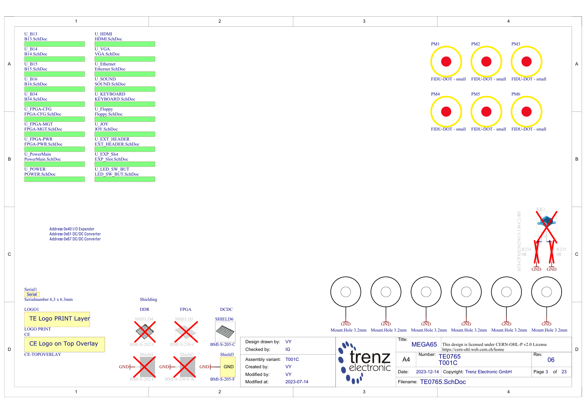
TE0765.SchDoc (top level). The left column is the table of contents: every *.SchDoc sub-sheet. (click any sheet to open it full-size)The boxed block in the corner of each sheet tells you where you are: the project (MEGA65),
the board number (TE0765), the Rev. (06), the date, the page N of 23,
and the filename of that sub-sheet (e.g. HDMI.SchDoc). When someone says "see the sound
sheet," this is how you find it — and how you confirm you're reading the right revision.
The numbers across the top/bottom (1–4 or 1–8) and letters down the sides (A–D) form a coordinate grid, like a paper map. A part or note is referenced by its square — "the level shifter at C3." On a dense sheet this is the only sane way to point at something.
Not every connection is a drawn line. A net label — a name like
SDRAM_DQ0, C64_D7, or AUDIO_BCLK — means "this wire is electrically the same
as every other wire with this name," even across different sheets. That's how the FPGA on one sheet reaches the SDRAM
on another without a literal wire between them. Special cases you'll see constantly:
3.3V, 5V, 1.8V, 1V — the voltages that feed everything.GND — the common return; the most-repeated label on the board.B13, B16, B34…) carry whole groups of signals to the matching flag on another sheet.Every component has a refdes — a letter for its type plus a number:
U = IC/chip · R = resistor · C = capacitor ·
L = inductor/ferrite · D = diode/LED · T = transistor ·
J = connector/jack · S = switch · Y/oscillator = clock.
You'll notice swarms of small capacitors next to every chip — those are decoupling capacitors, steadying the power supply right at each chip's pins. Once you learn to mentally skip them, the real signal connections jump out.
One last representational trick: a single large part is often drawn as several symbols
across different sheets. A big chip or a many-pin connector gets sliced into "units" sharing one number
with letter suffixes — U1A, U1B, U1C… — all the same physical part.
So when you see a lettered refdes, look for its siblings elsewhere. On the MEGA65 this trick matters more than on
almost any board — which is exactly where Part B begins.
This is the board grouped by what it does — the way an engineer thinks about it. We start at the center (the FPGA), then walk outward to memory, boot, and every port. Each block maps to something you met in Lesson 01, but now you can see the actual silicon. (Part C then walks the same board the other way — page by page, as the schematic is literally drawn.)
This is the insight that ties back to Lesson 01. The FPGA —
Xilinx XC7A200T-2FBG484C — appears on many sheets as U1A,
U1B, U1C … up to U1J. These are not ten chips. They are
one physical chip, U1, split across sheets because a 484-ball BGA package has far too many pins
to draw in a single symbol. Altium (the CAD tool) lets you slice one part into multiple "units," and the MEGA65
splits U1 by I/O bank.3
So the FPGA's pins are grouped by bank, and each bank gets its own sheet — this is the spine the rest of the tour hangs off:
U1A = Bank 13 · U1B = Bank 14 · U1C = Bank 15 · U1D = Bank 16 — general I/O.U1E = Bank 34 · U1F = Bank 35 — high-speed I/O (SDRAM, HDMI, Ethernet).U1G = Bank 0 — configuration/boot pins.U1H = Bank 216 — gigabit transceivers (mostly unused on MEGA65).U1I / U1J — the FPGA's own power and ground balls.Seeing "the chip is the banks" makes the rest of the schematic legible: each I/O sheet is really "what does this slice of the FPGA connect to?" — which is precisely the question each block below answers.
Think of this as a step-down chain: raw wall power gets refined into progressively smaller, cleaner voltages the closer it gets to the FPGA — because the chip can't run on messy high voltage directly.3
J11) — where the external power adapter plugs in.U34) that only lets power through when it's in a safe range.U12) steps the input down to a steady 5 V — the board's main supply, which most peripherals run on directly.This is the board's heartbeat — everything inside the FPGA needs to tick in sync, and it all starts from a single source:
U17) does nothing but produce a steady, precise pulse: 100 million ticks per second (100 MHz).One crystal in, many clocks synthesised on-chip — no need for a dozen separate oscillators on the board.
Lesson 01's "Attic RAM" turns into two real, physical chips here — each wired straight to the FPGA at high speed, on a different I/O bank:
U44), 64 MiB, on Bank 34. The R6 Attic-RAM backing store (of which the core currently maps 8 MiB; see Lesson 01).3U29), 8 MiB, on Bank 16. The older, smaller memory that the SDRAM was added (at revision R4) to surpass.3An FPGA is blank silicon — it forgets everything when powered off, so every single power-up it has to be told from scratch which circuit to become:3
U5A), a separate storage chip next to the FPGA holding the core bitstream(s) — this is where your "core slots" physically live.The pattern: the FPGA is blank at every power-on → reads its "personality" from a dedicated flash chip → becomes whatever core was stored there.
This introduces a pattern you'll see repeated for audio and Ethernet too: the FPGA generates the content, while a dedicated chip handles the physical signal going out the connector.
U3) — a video DAC (Digital-to-Analog Converter). VGA monitors expect analog voltage levels, not digital bits, so this chip converts the FPGA's digital R/G/B into the analog signal the VGA connector needs.3U10) — HDMI is digital too, but uses a high-speed encoding called TMDS; this chip cleans up and re-drives the FPGA's TMDS signal so it's strong enough for the HDMI cable.3The MEGA65 can drive both ports from the same VIC-IV source at once — VGA for older analog displays, HDMI for modern digital ones. Same data, two different physical translations.
Same pattern again: the FPGA generates the sound data, and a dedicated chip turns it into an actual analog signal you can hear.
U37) — a stereo audio DAC that converts that digital stream into analog voltage for the 3.5 mm jack and RCA outputs.3This high-quality DAC is itself a later-revision upgrade over earlier, simpler audio hardware — see the evolution table below.
The same FPGA-does-protocol / chip-does-wire pattern, this time for networking.
U4) — a dedicated Ethernet PHY (physical-layer) chip that converts the FPGA's simplified signals into the real electrical signaling an Ethernet cable requires.3J10A) — with built-in magnetics (tiny transformers that electrically isolate the board from the cable).Same shape as video and audio: the FPGA owns the flexible protocol logic; a fixed-function chip next door meets the connector's exact electrical spec.
The rest of Lesson 01's port list — this block is a grab-bag, since each of these is a genuinely separate physical port:
SD1) and full-size (SD2). Two slots let you keep system/core files on one card and your own disk images on the other.J5) — the link out to the MK-II keyboard's own electronics, which read the key matrix through I2C expanders inside the keyboard housing (Lesson 01).The throughline: these are the "talk to old/external C64 hardware" ports — voltage-translating, bus-exposing connectors — as opposed to Blocks 5–7, which generate new digital media for modern devices.
The housekeeping chips — small, slow support chips the board can't function properly without, even though none of them do anything flashy. All four share one I2C bus (a simple 2-wire bus — clock + data — that many chips can share, each picked out by its own address):3
That last point matters beyond this board: it's literally how the MEGA65 core detects its own hardware revision at runtime — the same reason this lesson insists on qualifying facts like "64 MiB SDRAM" by revision (see the evolution table below).
Part B grouped the board by function. Part C is the other lens: every sheet of the actual PDF, in order (pages 3→23), so after this you can open any page and know what every major part is. For each sheet: its purpose, the drawing, and a high-level component list — chips and connectors, not every wire.
Click any drawing to open it full-size. Refdes reminder: U chip ·
J connector · R/C/L passives · D diode/LED · T transistor · S switch.
Recurring helper parts (so the lists below can stay short — each does one simple job): buffer (NC7SZ126, 74AHCT1G125) — drives or isolates a single signal; level shifter (SN74LVCH16T245) — bridges the FPGA's 3.3 V to the 5 V legacy bus; load switch (AP2196, MP5010, MP5077) — turns a power rail on or off under control; MOSFET (2N7002) — a tiny transistor used as an on/off switch; TVS / clamp diode (SMBJ, WE-TVS, BAV199) — shunts voltage spikes to protect a port; decoupling cap — the cap swarms next to every chip, steadying its supply.
Title & index sheet — no circuitry; the table of contents for the other 20 sheets.
PM1–PM6 — mechanical/assembly marks, not electrical.0x40 IO expander, 0x61/0x67 DC-DC).Disk/serial port, expansion headers, and the developer debug/JTAG interface.
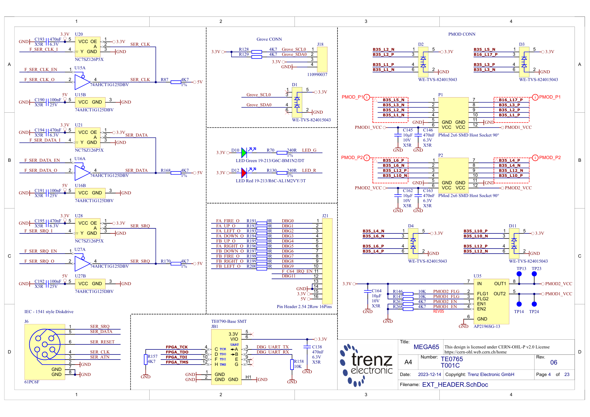
J6 — IEC serial port (1541-style disk drives): SER_CLK/DATA/SRQ/RESET/ATN.U15/U16/U27 (74AHCT1G125) + U20/U21/U28 (NC7SZ126) — buffers/level-shifters for the IEC lines.J18 — Grove connector (I2C); P1/P2 — PMOD expansion sockets with TVS ESD diodes and load switch U35.J21 — 16-pin debug header (DBG0–11, joystick test lines).JB1 — TE0790 JTAG/UART module (FPGA_TCK/TDO/TDI/TMS + debug UART); status LEDs D10/D12.The C64-compatible cartridge / expansion port and its bus translation.
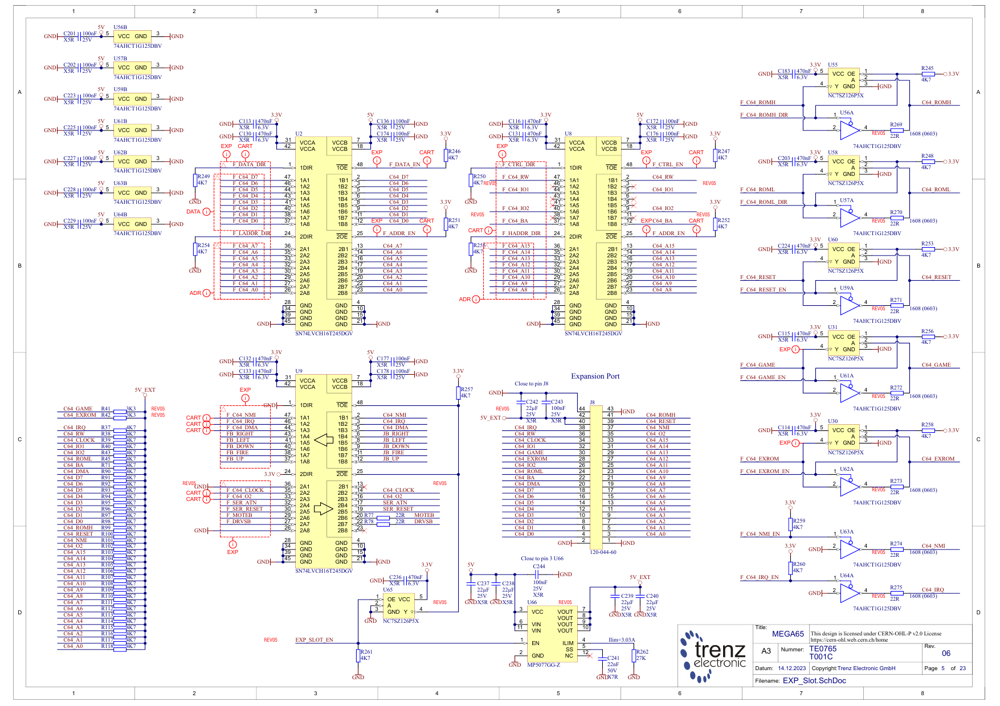
J8 — the cartridge/expansion edge connector (full C64 bus: D0–7, A0–15, control lines).U2/U8/U9 (SN74LVCH16T245) — 16-bit level shifters translating the 5 V C64 bus to the FPGA's 3.3 V.U65/U66 — buffer + load switch for the expansion-slot 5 V supply.FPGA I/O Bank 13 (symbol U1A) — the VGA/video-DAC pins and the master clock.
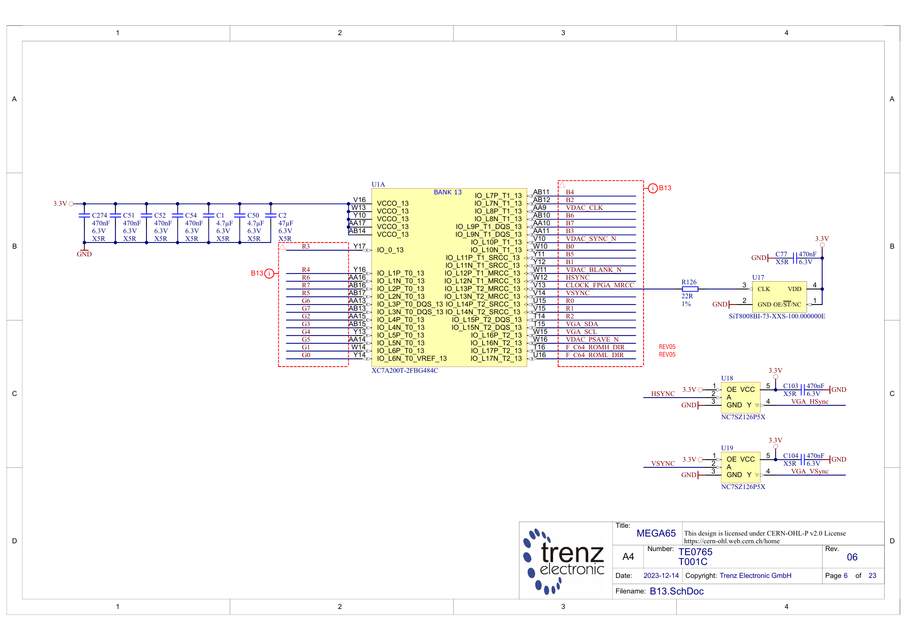
U1A — the FPGA's Bank 13 pins; carries the video-DAC and sync signals out to the VGA sheet (VDAC_CLK, HSYNC, VSYNC, R/G/B bits, VGA DDC).U17 — 100 MHz SiT8008 oscillator (the board's master clock) → a clock-capable FPGA pin.U18/U19 (NC7SZ126) — HSYNC/VSYNC buffers; plus the bank's decoupling-cap array.FPGA I/O Bank 14 (U1B) — serial/IEC, the config-flash SPI, and part of the C64 bus.
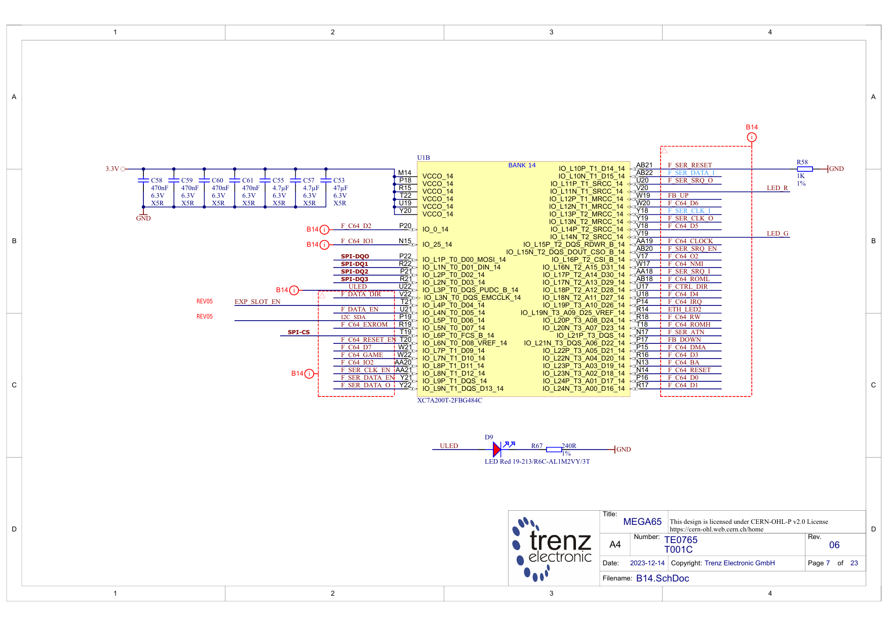
U1B — the FPGA's Bank 14 pins; handles the IEC serial port, the link to the boot/config flash, and some C64-bus lines (F_SER_*, SPI-DQ0–3/CS, F_C64_*, Ethernet LED).D9 — ULED status LED; plus bank decoupling.FPGA I/O Bank 15 (U1C) — analog joystick/paddle inputs and debug lines.
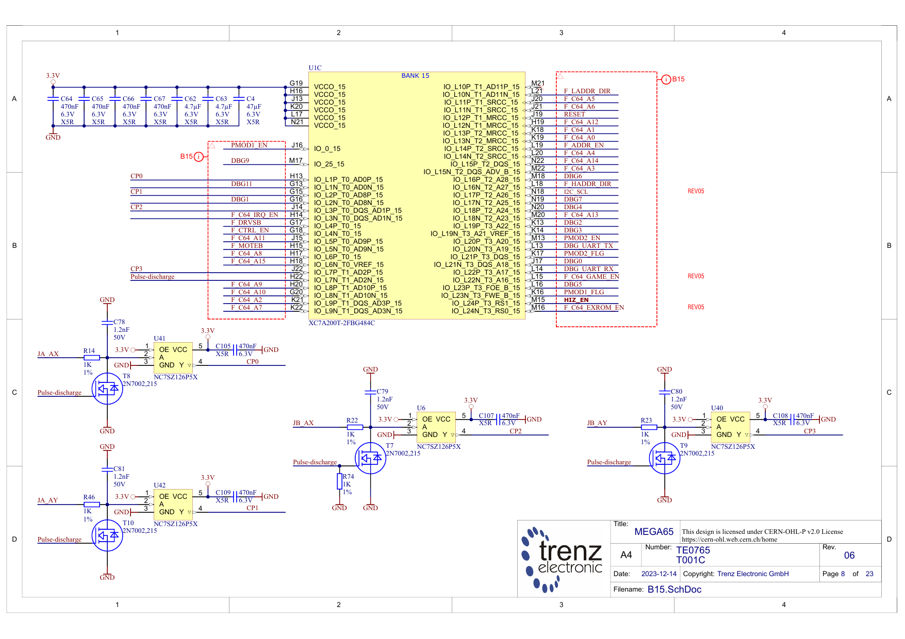
U1C — the FPGA's Bank 15 pins; reads the analog paddle inputs and the debug lines (JA/JB paddle X/Y, DBG*/CP0–3, PMOD enables, C64 address).T7–T10 (2N7002 MOSFETs) — paddle charge/discharge timing front-ends.U6/U40/U41/U42 (NC7SZ126) — buffers; plus bank decoupling.FPGA I/O Bank 16 (U1D) — SD card, audio I2S, keyboard, HyperRAM, and the I2C support chips.
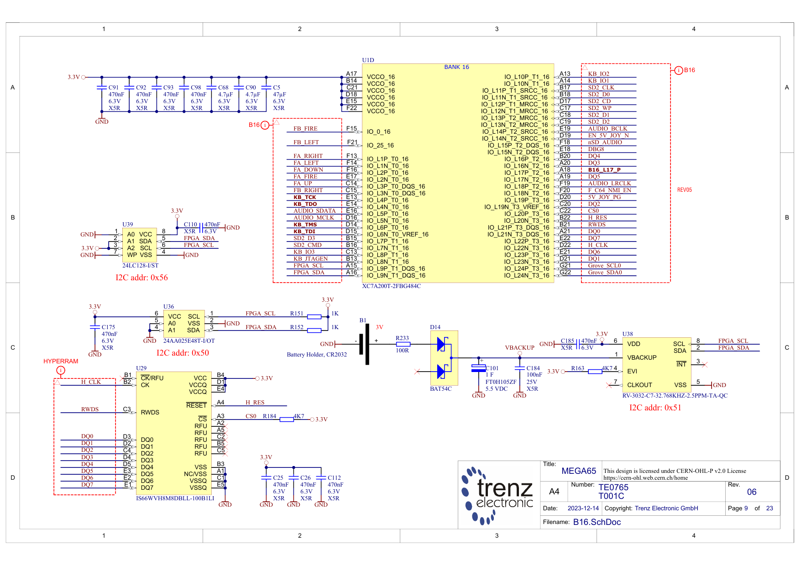
U1D — the FPGA's Bank 16 pins; connects the SD card, the audio I2S link, the keyboard, and the HyperRAM/I2C chips below (SD2_*, AUDIO_*, KB_IO1/2/3 + KB JTAG, Grove).U29 — IS66WVH8M8 HyperRAM (8 MiB).U39 — 24LC128 config EEPROM (I2C 0x56); U36 — 24AA025E48 EEPROM holding the factory MAC address (I2C 0x50).U38 — RV-3032-C7 real-time clock (I2C 0x51) + B1 CR2032 coin cell + BAT54C.FPGA high-speed Banks 34 & 35 (U1E/U1F) — SDRAM, HDMI, Ethernet, second SD.
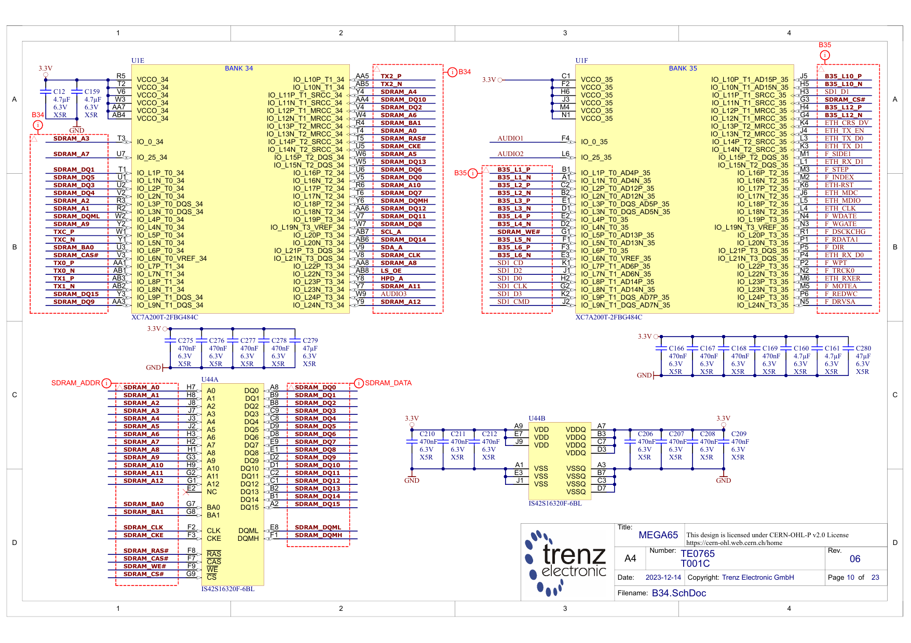
U1E — the FPGA's Bank 34 pins; drives the two fastest links — the SDRAM bus and the HDMI video pairs (SDRAM_*, HDMI TX0/1/2 + clock).U1F — the FPGA's Bank 35 pins; drives the Ethernet PHY and the second SD card (ETH_* RMII, SD1, audio).U44 — IS42S16320 SDRAM (64 MiB), the R6 Attic-RAM backing store; plus large bank decoupling arrays.How the FPGA boots — configuration flash, boot mode, JTAG, reset, supervisor.
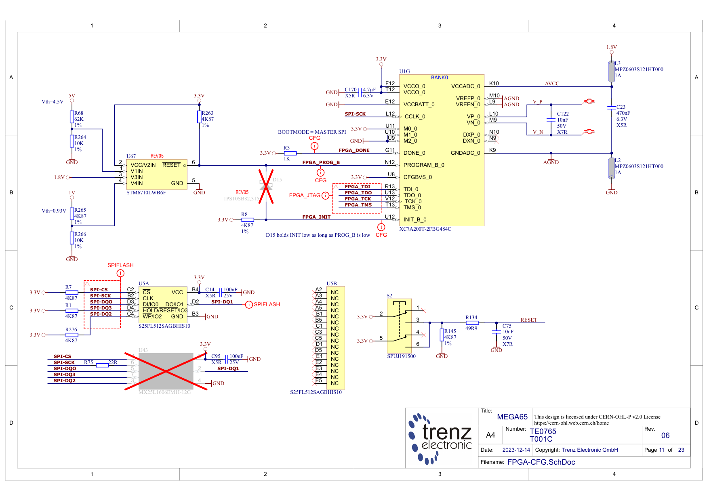
U1G — FPGA Bank 0 (config pins): CCLK, DONE, PROGRAM_B, INIT, M0–2 mode pins, XADC analog (V_P/V_N, AVCC).U5A — S25FL512S QSPI config flash (512 Mbit) holding the core bitstream/slots; BOOTMODE = MASTER SPI.S2 reset switch; U67 STM6710 power supervisor; D15 INIT LED.The FPGA's gigabit transceivers — present but essentially unused on the desktop MEGA65.
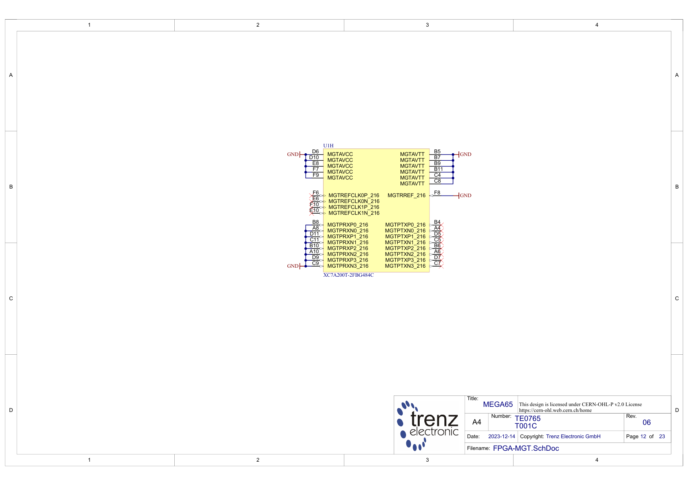
U1H — FPGA Bank 216 (MGT): MGTAVCC/MGTAVTT supplies, MGTREFCLK, and the MGTPRX/MGTPTX serial pairs.The FPGA's own power & ground — supply pins and the big decoupling-cap field.
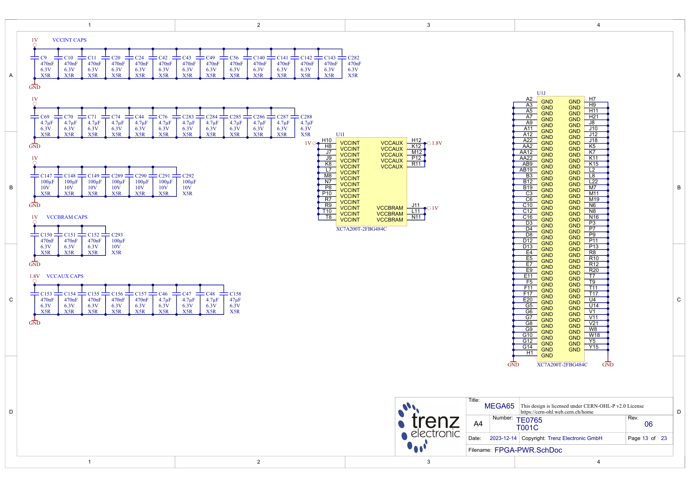
U1I — FPGA core-supply pins: VCCINT (1 V), VCCAUX (1.8 V), VCCBRAM (1 V).U1J — all of the FPGA's GND balls.The two DE-9 joystick / paddle / mouse ports and their switchable 5 V supply.
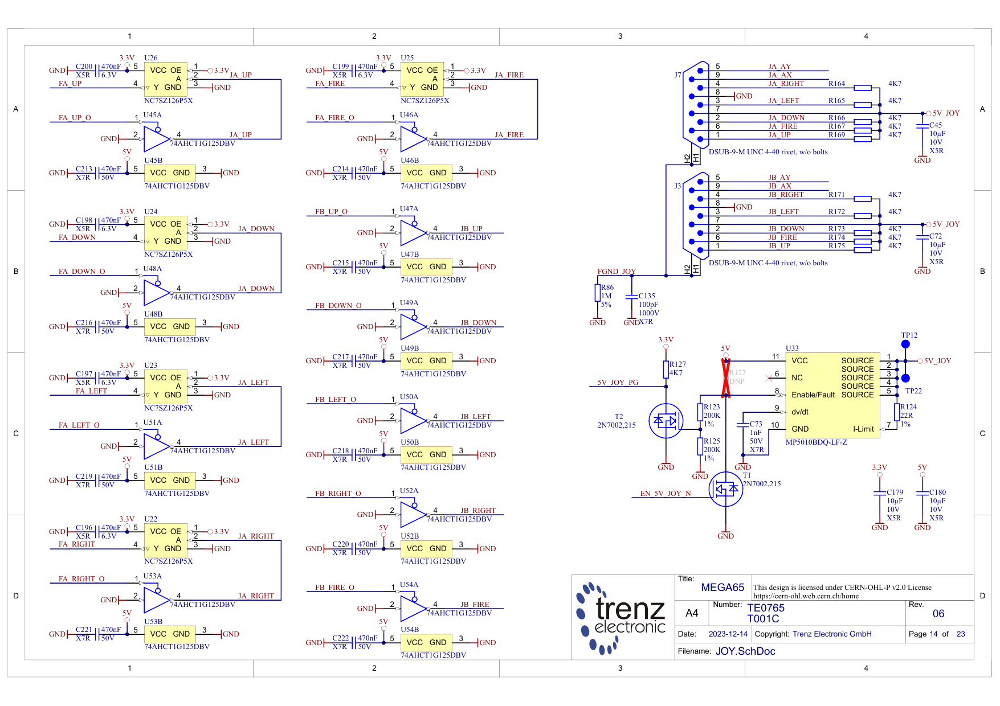
J7 (port A), J3 (port B) — DE-9 connectors.U45–U54 (74AHCT1G125) + U22–U26 (NC7SZ126) — buffers/level-shifters for up/down/left/right/fire on both ports (with the R4+ drive-low ability).U33 — MP5010 load switch providing switchable 5V_JOY; T1/T2 (2N7002) control.The keyboard connector — the link to the MK-II keyboard's own electronics.
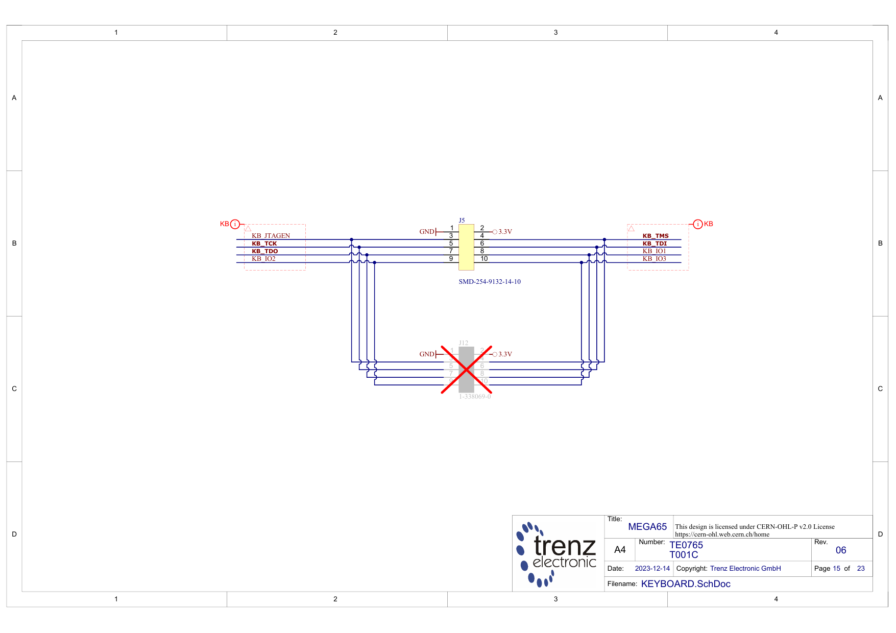
J5 — 10-pin keyboard connector: KB_IO1/IO2/IO3 (matrix data, read via the keyboard's own I2C expanders) plus the keyboard's JTAG (KB_TCK/TDO/TMS/TDI, KB_JTAGEN).J12 — alternate footprint, unpopulated.) A simple pass-through sheet — the smarts are in the keyboard.The internal 34-pin floppy-drive header and its power taps.
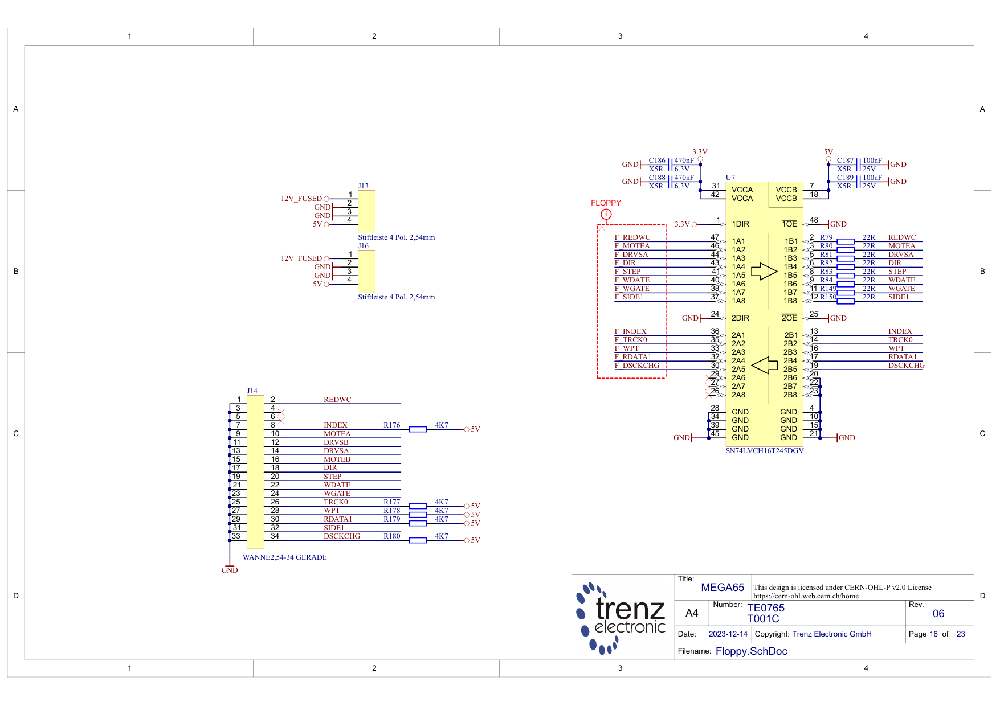
J14 — 34-pin floppy ribbon header (INDEX, MOTEA, DRVSA, DIR, STEP, WDATE, WGATE, SIDE1, TRCK0, WPT, RDATA1, DSCKCHG…).J13/J16 — 4-pin power connectors (12V_FUSED / 5 V / GND) for the drives.U7 — SN74LVCH16T245 level shifter (3.3 V ↔ 5 V) for all floppy signals; 22 R series + 4K7 pull-up resistors.Analog VGA video output.
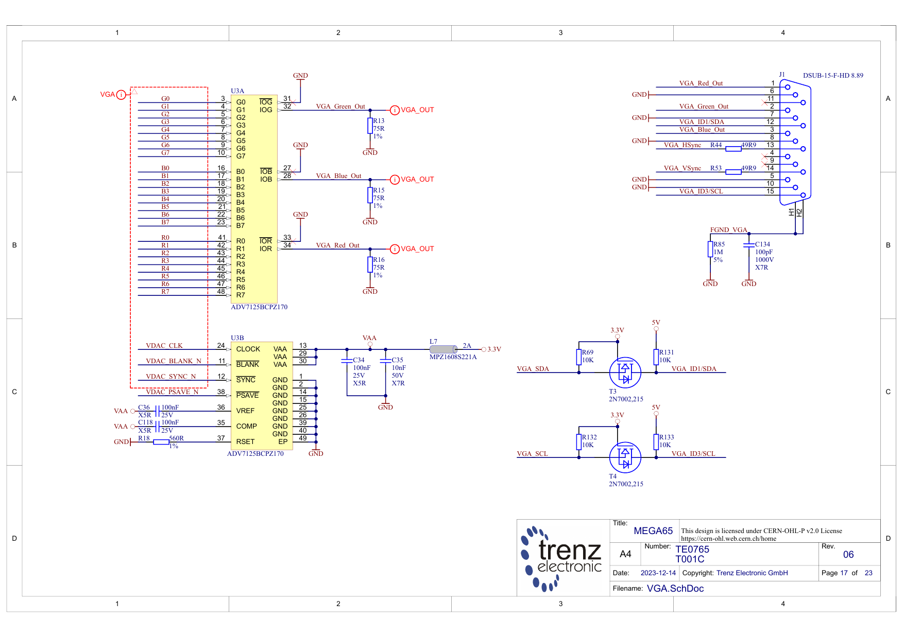
U3 — ADV7125 triple 8-bit video DAC (170 MHz): converts the FPGA's digital R/G/B to analog voltages.J1 — DSUB-15 VGA connector; 75 R output resistors, 49R9 on H/VSync.T3/T4 (2N7002) — level shifters for the VGA DDC I2C (SDA/SCL).Digital HDMI/DVI video output.
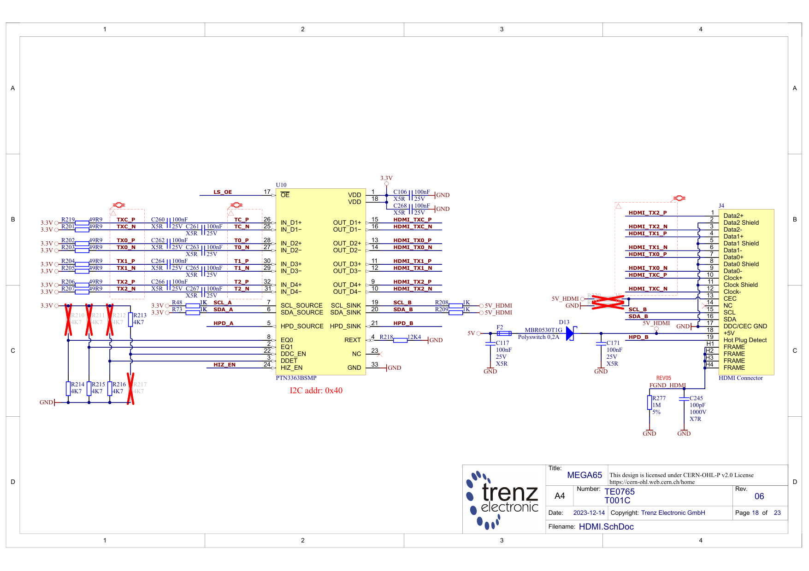
U10 — PTN3363 HDMI level-shifter/redriver (config at I2C 0x40): buffers the FPGA's TMDS pairs out to the connector.J4 — HDMI connector (Data0–2 + Clock TMDS, DDC SCL/SDA, CEC, Hot-Plug-Detect).F2 polyswitch + ESD diodes — 5 V_HDMI protection.100 Mbit Ethernet physical layer (the 45E100 controller lives inside the FPGA).
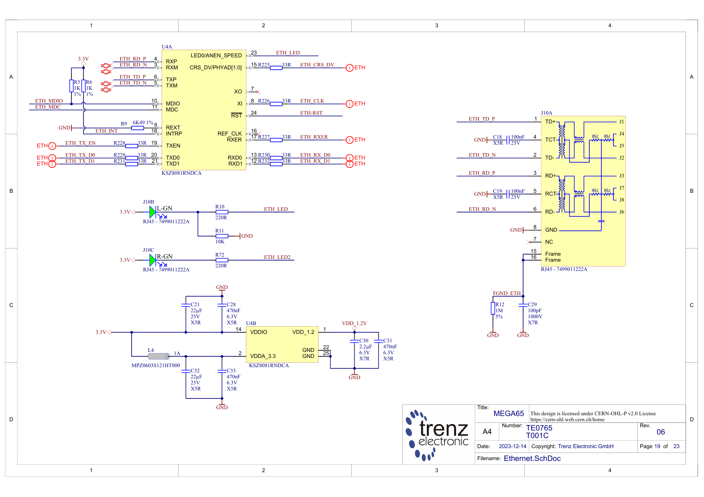
U4 — KSZ8081 RMII 10/100 Ethernet PHY (RXD/TXD, TX_EN, CRS_DV, MDIO/MDC, REF_CLK, RST).J10A — RJ45 jack with integrated magnetics; J10B/J10C — link/activity LEDs; PHY 1.2 V supply filtering.SD-card sockets, DIP switches, and the hardware board-revision identifier.
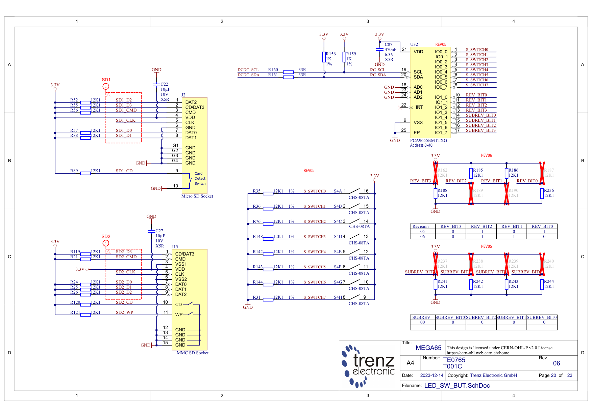
J2 — micro-SD socket (SD1); J15 — full-size SD/MMC socket (SD2).U32 — PCA9655 I2C IO expander (0x40): reads the 8 DIP switches (S4) and the board REV_BIT0–3 / SUBREV_BIT0–3 straps.0110) — how the running core auto-detects which board it's on.Power entry, protection, and the main 5 V rail.
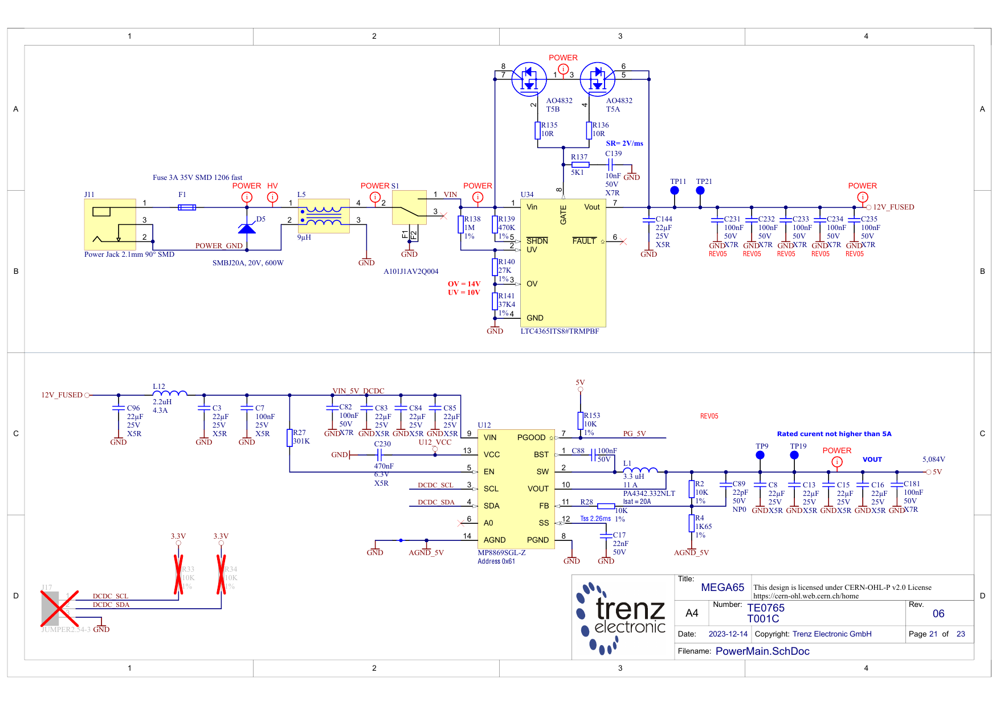
J11 — 2.1 mm barrel jack; F1 3 A fuse; D5 SMBJ20A TVS surge diode; L5 common-mode choke; S1 power switch.U34 — LTC4365 over/under-voltage protection (OV ≈ 14 V, UV ≈ 10 V) with AO4832 pass MOSFETs (T5).U12 — MP8869 buck regulator (I2C 0x61) → 5 V main rail (≤5 A); also the 12V_FUSED tap.The FPGA's core voltage rails, derived from 5 V.
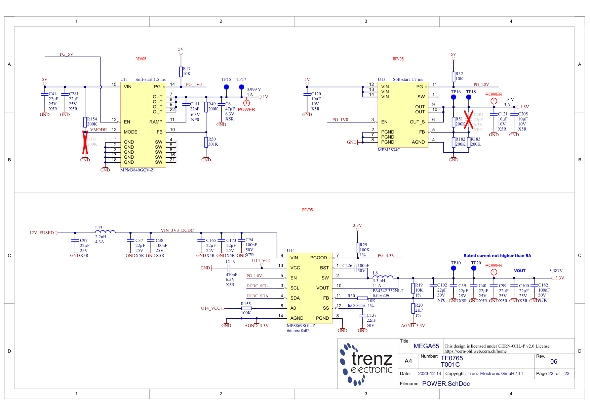
U11 — MPM3840 → 1.0 V (VCCINT/VCCBRAM, the FPGA logic core).U13 — MPM3834 → 1.8 V (VCCAUX).U14 — MP8869 (I2C 0x67) → 3.3 V (all I/O, ≤5 A). Power-good (PG_*) and soft-start networks throughout.Audio output — the digital SID stream turned into analog line-out.
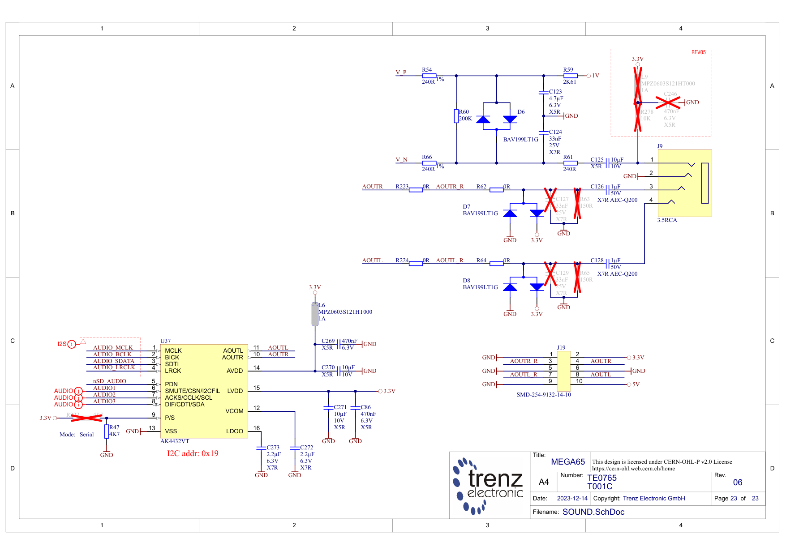
U37 — AK4432 I2S stereo audio DAC (control at I2C 0x19): fed by AUDIO_MCLK/BCLK/SDATA/LRCLK.J9 — 3.5 mm / RCA output jack; J19 — audio header.The board you're reading is one snapshot in a decade of revisions. The MEGA65 began as an FPGA experiment on hobbyist dev boards and matured into the Trenz-built desktop machine — and crucially, hardware facts depend on which revision you mean. The early "three FPGAs" and "8 MiB only" descriptions were true once and aren't now. Here's the arc, from the User's Guide's "Model Specific Features" appendix:2
| Rev | Year / use | What changed |
|---|---|---|
| R1 | earliest prototype | First desktop prototype hardware (id $01). |
| R2 | prototype | Desktop board with battery-backed RTC + NVRAM, an ADV7511 digital-video chip, and a mono PC speaker amp. |
| R3 / R3A | DevKit 2020; production 2022–23 | Dropped the ADV7511; stereo speaker amp. R3A is the same PCB with a bigger QSPI flash — 8 core slots instead of 4. |
| R4 | major rework | Removed the Intel MAX10 helper FPGA entirely — the second on-board programmable chip — simplifying the design and removing a failure mode. Added a 64 MiB SDRAM alongside the 8 MiB HyperRAM, a high-quality audio DAC, the new RV-3032 RTC, joystick drive-low capability, and the J21 debug header. |
| R5 | supply-chain rework | Minor rework of R4 (power-regulator parts). Made several expansion-port signals bidirectional, added 4 more DIP switches (8 total) behind an I2C expander, and exposed the board revision in hardware via that expander. |
| R6 | production 2024 — this board | Electrically identical to R5. The current shipping desktop MEGA65, and the schematic this lesson reads. |
The "three FPGAs" story, accurately: R2/R3 really did have three programmable chips — the Artix-7, the Intel MAX10 helper (removed at R4, above), and a Lattice chip in the MK-I keyboard. The keyboard's chip went away in a separate redesign — the MK-II keyboard reads its matrix through plain I2C IO-expanders instead (Lesson 01). So today's R6 desktop + MK-II keyboard has exactly one FPGA, the Artix-7 — verified against this very schematic.2
There's also a handheld branch — the MEGAphone (id $21) — with a touch
screen, accelerometer, and I2C-controlled power, plus FPGA dev-board targets (Nexys4DDR, QMTECH) for builders
without a real board. A running MEGA65 reports its own revision: the core reads it from the I2C expander, and you can
check yours via $D629 after enabling the MEGA65 I/O personality.2
Takeaway for accuracy: whenever you state a MEGA65 hardware fact, anchor it to a revision. "The MEGA65 has a 64 MiB SDRAM" is an R4-and-later fact; "three FPGAs" was an R2/R3 fact. This lesson is R6 throughout.
Answer out loud before opening each.
U1A through U1J appear on many sheets. How many chips is that?One. They're all units of U1, the single Xilinx XC7A200T FPGA, split by I/O bank because the 484-ball package has too many pins to draw as one symbol.
SDRAM_DQ0 on two different sheets with no wire between them. Are they connected?Yes — identical net labels are the same electrical wire, even across sheets. That's how the FPGA on one sheet reaches the SDRAM on another.
Physical output. The FPGA generates the video; the ADV7125 is the analog VGA DAC and the PTN3363 drives the HDMI TMDS lines. The FPGA does protocol; dedicated chips do the wire. (Same pattern as the KSZ8081 Ethernet PHY for the 45E100.)
From the S25FL512S QSPI flash (U5A) on the FPGA-CFG sheet, in MASTER SPI boot mode. JTAG is the alternate path for loading a bitstream from a PC.
Because it's revision-specific. The 64 MiB SDRAM arrived at R4; R2/R3 had only the 8 MiB HyperRAM. Always anchor a hardware fact to a revision.
Primary source — the schematic itself
MEGA65 User's Guide repo →
assets/TE0765-06.PDF (the R6 schematic, 21 sheets) and the "Model Specific Features"
appendix for the revision history.
Open the PDF beside this lesson and walk the same sheets at full resolution. The schematic is a primary source — every block claim above is read straight off it.
↪ See the running Glossary for every term in bold.
Footnotes / sources.
1 The R6 schematic TE0765-06.PDF in the MEGA65 User's Guide repo (assets/), included via appendix-schematics.tex; title block reads MEGA65 / TE0765 / Rev. 06 / 2023-12-14, licensed CERN-OHL-P v2.0; Trenz Electronic is the board manufacturer.
2 MEGA65 User's Guide, Model Specific Features appendix (appendix-target-specific.tex): per-revision change lists (R2–R6, R3A, MEGAphone) and the $D629 hardware-identifier table.
3 Component identities (XC7A200T-2FBG484C FPGA and its bank split U1A–U1J; IS42S16320 SDRAM; IS66WVH8M8 HyperRAM; S25FL512S config flash; ADV7125 VGA DAC; PTN3363 HDMI redriver; KSZ8081 Ethernet PHY; AK4432 audio DAC; LTC4365/MP8869/MPM3840/MPM3834 power; 24LC128/24AA025E48 EEPROMs; RV-3032 RTC; PCA9655 I/O expander) read directly from the corresponding sheets of TE0765-06.PDF.